Ribbon - application menu
Application menu button is a big round button placed in the
top-left corner of the ribbon frame. The
JRibbon.setApplicationMenu
API is used to provide the meta-data description of the entries
in the application menu.
Depending on custom support in current look-and-feel, the application menu button may be partially hosted in the decorated titled pane. This functionality is presently supported by A03 and Substance look-and-feels.
The screenshot below shows an expanded two-level application menu under Blue Ice skin of Synthetica look-and-feel:
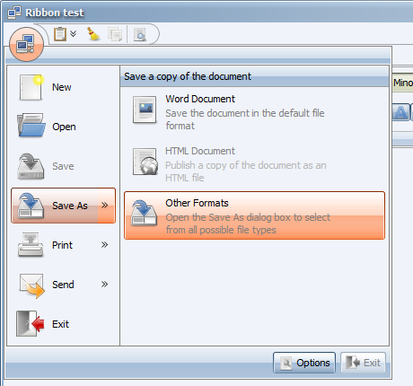Ribbon - application title bar
Application title bar hosts two types of content - taskbar components
added by the
JRibbon.addTaskbarComponent
API, and contextual task group headers. This is relevant only for those
look-and-feels that do not explicitly support placing this content in
the ribbon frame title bar.
The application title bar is shown to the right of the application menu button, directly above the ribbon task toggle buttons.
The screenshot below shows the application title bar hosting the ribbon taskbar under Metal look-and-feel:
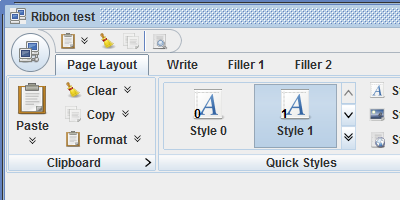Ribbon - resize policies
The resize policy defines a single visual state of the given ribbon band. For every control in the specific ribbon band (command button, gallery etc), the resize policy defines what is its display state. The resize sequencing policy defines which ribbon band will be chosen next when the ribbon is shrinked / expanded.
The base interface for the resize policies is defined in the
RibbonBandResizePolicy
interface. The new
JRibbonBand.setResizePolicies
API can be used to install a custom set of resize policies on
the specific ribbon band. The
CoreRibbonResizePolicies
factory provides two core resize policies list - permissive and
restrictive. The default permissive list starts with a resize policy
that shows all command buttons and ribbon galleries in the BIG display
state, fully utilizing the available screen space. The restrictive
list starts with a resize policy that respects the associated ribbon
element priority set on the specific component.
The base interface for the resize sequencing policies is defined
in the
RibbonBandResizeSequencingPolicy
interface. The new
RibbonTask.setResizeSequencingPolicy
API can be used to install a custom resize sequencing policy on
the specific ribbon task. The
CoreRibbonResizeSequencingPolicies
factory provides two core policies - round robin and collapse from last.
Under the default round robin policy, the ribbon bands are being
collapsed in a cyclic fashion, distributing the collapsed pixels
between the different bands. Under the collapse from last policy,
the ribbon bands are being collapsed from right to left.
The screenshot below shows the progressive collapse of different
ribbon bands under the core CollapseFromLast
resize sequencing policy. Under this policy, the ribbon bands are being
collapsed from right to left. When the currently collapsing band has
reached the last step (iconified), the band to its left becomes the
next one to be collapsed.
Ribbon - scrolling shrinked content
When you start to shrink the ribbon frame horizontally, at a certain point the content needs to be either shrinked or scrolled, depending on the minimum size of the corresponding ribbon components and the overall content of the frame. The screenshot below shows three first stages of the ribbon component at progressively smaller widths:
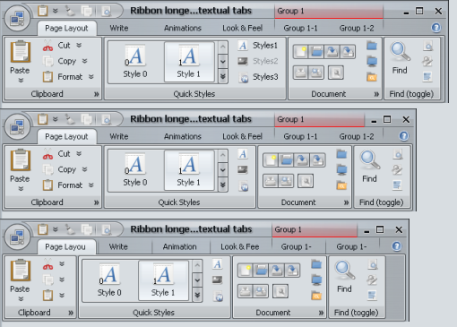The second step shows that the contextual task group header (in the title pane) does not overflow into the bounds of the min / max / close buttons. The third step shows what happens when there is not enough width to show the preferred content of all the task toggle buttons - they begin to shrink (note the last letters that are cut off on some of the buttons), and the area shows horizontal dividers between the buttons.
At a certain point, there is not enough space to show all the task toggle buttons under the minimum width (that is still able to show the first few letters). At this point, the area that hosts the task toggle buttons becomes a scrollable panel:
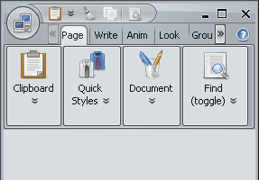Finally, at some point there is not enough space to show the ribbon bands under the most restrictive resize policy. At that point, the area that hosts the ribbon bands becomes a scrollable panel as well:
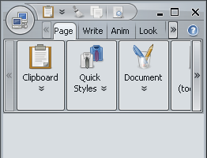Ribbon - rich tooltips
The org.jvnet.flamingo.common.RichTooltip
class provides the API to define different parts of the rich tooltip:
- Title text
- Optional main image
- One or more description paragraphs
- Optional footer image
- Optional one of more footer paragraphs
The following APIs can be used to set rich tooltips:
AbstractCommandButton.setActionRichTooltipto set the rich tooltip on the action area of a command button.JCommandButton.setPopupRichTooltipto set the rich tooltip on the popup area of a command button (does not apply to toggle command buttons in theJToggleCommandButtonclass that only has an action area).JRibbon.setApplicationMenuRichTooltipto set the rich tooltip on the ribbon application menu button.JRibbonComponent.setRichTooltipto set the rich tooltip on the hosted core Swing components (see later).
When a command button is part of a ribbon band, its rich tooltips
will be shown below the ribbon. Here is a rich
tooltip of action area of the Paste button in the first
ribbon band (note how the tooltip is displayed below the ribbon
and does not hide any part of the ribbon):
The left horizontal alignment makes sure that the tooltip is clearly associated with the command button (since there is a considerable vertical space between them). The same command button has a different rich tooltip for the popup area:
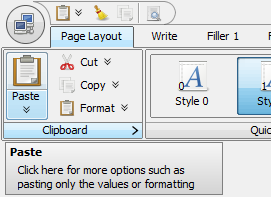You can associate a rich tooltip with the application menu button:
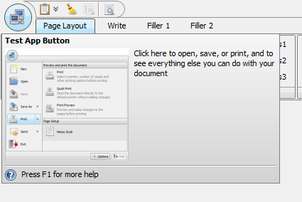Command buttons in the application task bar show the rich tooltip directly below:
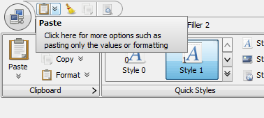Ribbon - key tips
Key tips allow operating the ribbon with keyboard. Unlike the traditional menus-and-toolbars system, every command and control in ribbon can have associated key tip. This allows efficient access and activation of application menu items, task toggle buttons, task bar buttons, task expand buttons and other ribbon sub-components. The key tip mode is initiated with either Alt or F10 key.
Key tips are shown in groups. A key tip group is associated with the specific ribbon entity. When the key tip mode is initiated, the key tip group for the entire ribbon is displayed. It contains key tips for the application menu button, taskbar components and task toggle buttons:
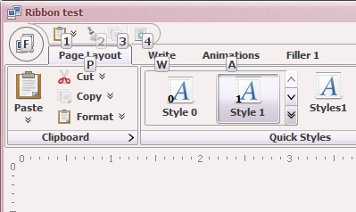Pressing the letter for taksbar button activates that button. Key tips for disabled buttons are painted with partial translucency. Pressing the letter for task toggle button selects the matching ribbon task. Pressing the letter for the application menu button shows the application menu. Once the next key tip group is shown, the previously shown key tip group is hidden. Pressing Esc dismisses the currently shown key tip group and shows the previous key tip group. When the initial key tip group is dismissed, the key tip mode is exited.
In the screenshot above, pressing key ‘P‘ shows the key tip group for the first (and currently selected) ribbon task:
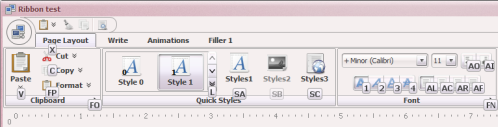The key tips are shown for ribbon buttons, task expand buttons
(look for ‘FO‘ and ‘FN‘),
ribbon gallery expand buttons (look for ‘L‘)
and buttons in button strips (in the "Font" ribbon band).
Some key tips have two letters - this can be useful not only when
there are not enough letters for the contents of the current task.
It can also help in grouping key tips of related functionality
(such as alignment and indentation command buttons in the
"Font" ribbon band that start with A).
In the present situation, when letter ‘F‘ is pressed,
only key tips that start with that letter are shown:
Key tips are also shown in popup menus and for menu buttons in rich popup panels (see below):
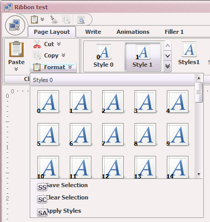Here, in order to activate the "Save Selection", you
would have to press the following sequence of keys:
- Alt or F10 to activate the key tip mode
- P to select the first ribbon task
- F, P to show the popup of the
"Format"button in the"Clipboard"ribbon task - S, S to activate the
"Save Selection"menu button
The sequence to activate a specific command can be quite long. As such, commands that are used often need to be identified and associated with shorter (and perhaps more memorable) sequences.
The APIs to associate key tips with different ribbon components are:
AbstractCommandButton.setActionKeyTipJCommandButton.setPopupKeyTipAbstractRibbonBand.setCollapsedStateKeyTipAbstractRibbonBand.setExpandKeyTipJRibbonBand.setRibbonGalleryExpandKeyTipRibbonApplicationMenuEntry.setActionKeyTipRibbonApplicationMenuEntry.setPopupKeyTipJRibbon.setApplicationMenuKeyTipRibbonTask.setKeyTipJRibbonComponent.setKeyTip
Ribbon - minimized mode
There are three ways to minimize and un-minimize the ribbon:
- Application code can use the new
JRibbon.setMinimizedAPI - User double-clicking a task toggle button
- User pressing
Ctrl+F1key stroke
Here is a screenshot of a ribbon when it is not minimized:
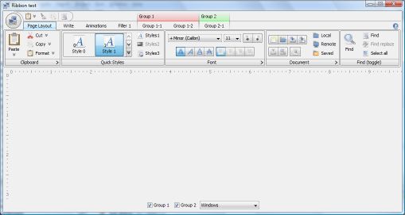When the ribbon is minimized in one of the three ways mentioned above, only the task bar and the task toggle button bar are shown. The ribbon bands of the currently selected ribbon task are hidden. Note how the main content of the frame (delineated with the Word-style ruler bands) gets expanded to occupy the area of the ribbon bands:
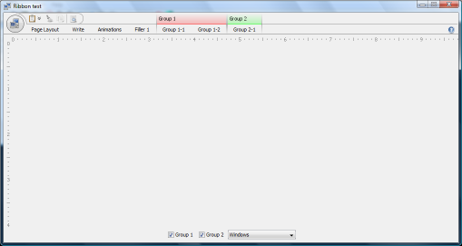When a task toggle button is single-clicked, the ribbon bands of the clicked task are shown in a popup overlay without shifting the main content area down:
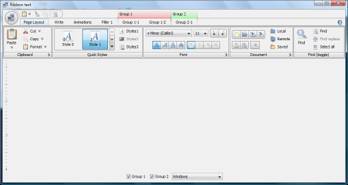The ribbon tasks in the popup overlay have the same cascading popup
support as the usual (non-minimized) ribbon tasks. Here is a extended
popup menu of a Format button from the first ribbon task:
Ribbon - visual groups in ribbon bands
Groups in ribbon bands allow fine-tuning the layout of larger
ribbon bands, grouping associated controls while still not
breaking the groups across multiple ribbon bands. Ribbon
band groups are separated with vertical separators and
are started with the
JRibbonBand.startGroup() API.
Here is a screenshot of a ribbon band with two groups:

Here is a screenshot of another ribbon band, with two groups as well:
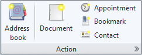And here is a screenshot of a ribbon band with three groups:

Ribbon - flow ribbon bands
The JFlowRibbonBand
class allows placing flowing content in a ribbon band.
Unlike the JRibbonBand,
it can host any core or third-party Swing component.
It is highly recommended to use components that do not take too
much vertical space (good examples are buttons, combo boxes,
radio buttons, checkboxes, spinners). The
CoreRibbonResizePolicies.getCoreFlowPoliciesRestrictive
API can be used to install a resize policy that first tries to
place the controls in two rows, and then, if there is not enough
horizontal space, will place the controls in three rows.
Here is a screenshot of a flow ribbon band with enough horizontal space to host all the controls in two rows:
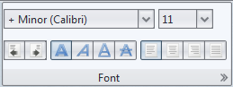When the ribbon is resized, the content of this band will be placed in three rows as necessary:
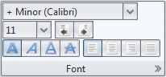Key tip placement on the flow ribbon band content is aligned with key tip placement of the command buttons on regular ribbon bands. Here is a screenshot of flow ribbon band keytips with two rows:
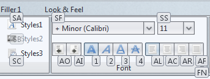The keytips for both the top row and the bottom row are aligned,
resulting in a consistent UI appearance. As a side note, to
associate a keytip with a core Swing component, wrap it
with JRibbonComponent
(more on this below).
And here is a screenshot of the same flow ribbon band with three rows:
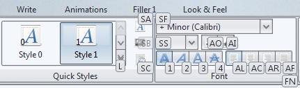Ribbon - hosting core Swing components
Core Swing components can be placed into regular
JRibbonBands. To do so,
wrap such a component with the
JRibbonComponent class.
In the simple case, use the constructor that takes a
JComponent to create a
ribbon band like this:
You can also associate an icon and a caption with the core Swing
component that you want to add to the ribbon band. For this, use the
JRibbonComponent constructor
that takes three parameters to create ribbon bands like these:
In this screenshot, the first ribbon band hosts three
JRibbonComponents, each one
wrapping a JComboBox with a
custom icon and caption text. The second ribbon band has two groups,
first hosting two JSpinners
with associated icons and captions, and the second hosting two
JSpinners. The second ribbon
band also shows that ribbon band groups can have titles - use the
JRibbonBand.startGroup(String) API.
Using the JRibbonComponent class
provides support for associating key tips and rich tooltips with core Swing
control.
The JRibbonComponent.setKeyTip
allows associating a keytip with the wrapped component. For simple wrappers,
the keytip is shown on the left hand side of the component, vertically aligned
with the other keytips shown on the ribbon:
For wrappers that show icons and captions, the keytips are shown between the icon and the caption, vertically aligned with the other keytips shown on the ribbon:
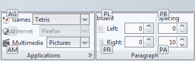Pressing the key sequence that leads to the specific core component will activate the relevant action. Buttons will be activated (including toggling the selection on toggle buttons, radio buttons and check boxes), comboboxes will show the popup, and other controls will acquire focus.
The JRibbonComponent.setRichTooltip
allows associating a rich tooltip with the icon / caption area of the
wrapped component. As with command buttons placed in the ribbon bands,
the rich tooltip will be shown below the ribbon so as not to interfere
with navigating the UI:
Here, the mouse is hovering over the Right:
caption of the left-bottom spinner in the
Paragraph ribbon band.
Ribbon - rich popup panels
The JCommandPopupMenu
provides functionality of a rich popup panel that can host
a command button panel and command menu buttons with
optional separators.
The screenshot below shows a rich popup panel
associated with the Format
popup button:
Internally, this class is used to show popup menus of
ribbon galleries. After adding a ribbon gallery with the
JRibbonBand.addRibbonGallery,
call the optional
JRibbonBand.setRibbonGalleryPopupCallback
API. The JRibbonBand.RibbonGalleryPopupCallback.popupToBeShown
method will be called when the expand button of the relevant ribbon gallery
is activated. At that point, the application code can place additional
content in the passed JCommandPopupMenu
instance, using JCommandPopupMenu.addMenuButton
and JCommandPopupMenu.addMenuSeparator
APIs.
The next screenshot shows an unexpanded ribbon gallery:
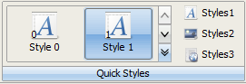And here is the popup menu of this gallery its expand button is activated:
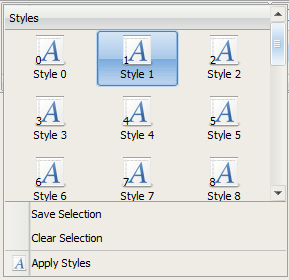Ribbon - help button
The JRibbon.configureHelp API
can be used to place a help button on the far right side of the task toggle
button panel and configure it with a custom application action listener.
The screenshot below shows the ribbon help button with custom icon:
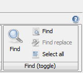Ribbon - A03 plugin
The A03 Flamingo plugin
provides fine-tuned visuals to some of ribbon's components. It also allows A03-powered
JRibbonFrames to host the application menu button,
taskbar panel and contextual task group headers on the title pane under decorated mode.
In doing so, A03 has joined Substance in providing streamlined visuals for the interested
applications.
The screenshot below shows ribbon with two contextual task groups under A03. Note that the application menu button, taskbar panel and contextual task group headers are hosted on the decorated title pane:
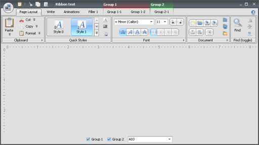The screenshot below shows ribbon with activated application menu:
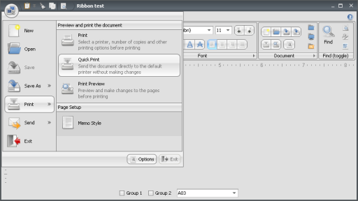Ribbon - high fidelity Substance skins
Release 5.1 of core Substance look-and-feel and the matching release 5.1 of Substance Flamingo plugin provide high-fidelity implementation of Office Blue and Office Silver skins for the ribbon component.
The screenshot below shows a sample ribbon under the new Substance Office Blue skin:

The screenshot below shows a sample ribbon under the new Substance Office Silver skin:

General - command button strip visuals
Visuals of command buttons and command button strips have been polished. This is especially visible under look-and-feels that have non-zero padding around them (such as Nimbus). Here is how a sample command button strip looked under the Windows look-and-feel on Vista:
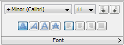and this is how it looks now:
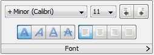This is the same command buttons strip under Nimbus before:

and now:
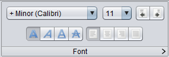Applications that wish to use the "segmented" appearance for command
buttons outside the command button strips (akin to the
"JButton.segmentPosition"
client property supported by Aqua look-and-feel) can use the new
AbstractCommandButton.setLocationOrderKind
API. When you're placing buttons inside a command button strip component,
there's no need to use this API explicitly.
General - command button gap scaling
The setHGapScaleFactor
and setVGapScaleFactor APIs on
the AbstractCommandButton and
JCommandButtonStrip classes allow
applications to fine tune the "density" of command buttons. This is especially
relevant for command button strips.
By default, buttons in horizontal command button strips use
hGapScaleFactor of 0.75, and the
buttons in vertical command button strips use
vGapScaleFactor of 0.75. This makes
the "kerning" between the adjacent buttons 25% smaller, accounting for gaps on
both sides of the inter-button separators.
The following screenshot illustrates the horizontal and vertical gap scale factors on two different command button strips under Nimbus look-and-feel:

The top three rows have the same vertical gap scaling, but the horizontal gap scaling is different. The bottom three rows have the same horizontal gap scaling, but the vertical gap scaling is different. The gap scaling is supported on vertical command button strips as well:
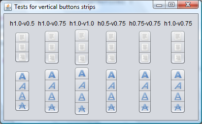